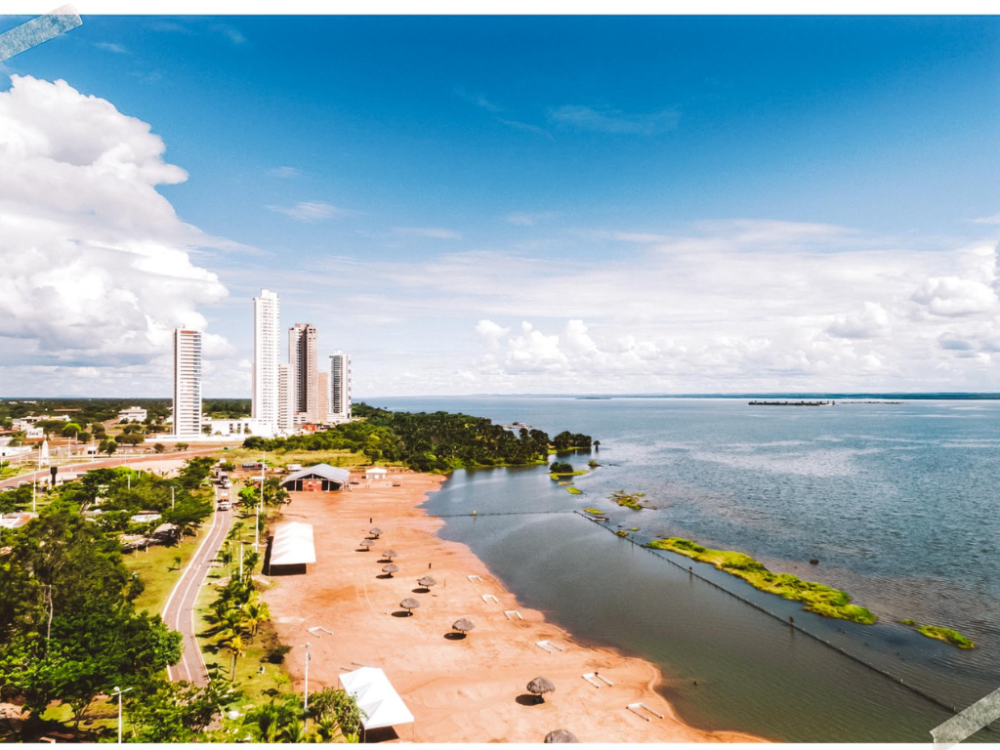

Tocantins foi criado em 1988 após divisão do estado de Goiás, tornando-se o estado mais novo do Brasil. Sua vegetação apresenta forte presença do Cerrado e áreas de transição com a Amazônia. A economia estadual é baseada principalmente na agropecuária e produção agrícola. Palmas, sua capital planejada, foi construída junto com a criação do estado. O Tocantins possui importante potencial energético e turístico. O crescimento econômico estadual vem sendo impulsionado pela expansão agrícola.
